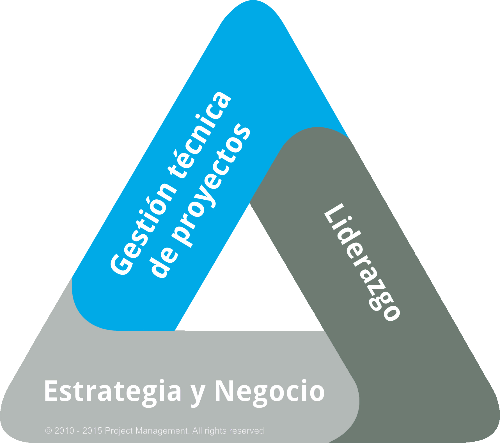
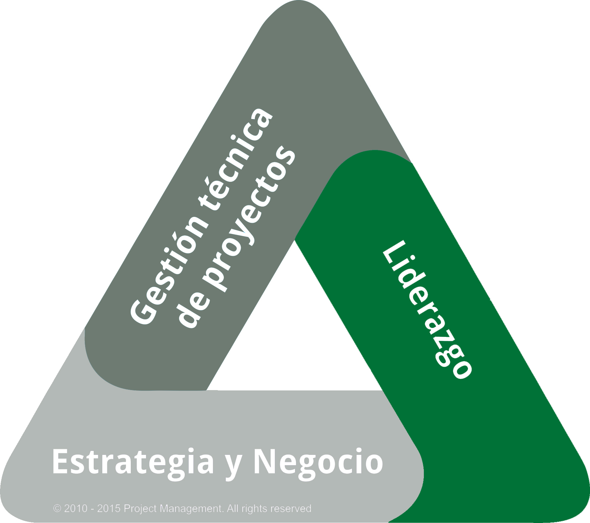

AG03.40 - ASP
Programa TenStep Agile Specialist Practitioner
Domina la filosofía ágil y se un agente de cambio en tu organización

Domina la filosofía ágil y se un agente de cambio en tu organización
Describirán con los conceptos y prácticas de la filosofía ágil.
Explicarán y detallarán las principales metodologías ágiles
Identificarán qué aspectos y elementos de los enfoques ágiles son los más relevantes dependiendo del contexto.
Aplicarán herramientas y técnicas para liderar la resolución ágil de incidentes en sus organizaciones.
Obtendrán la certificación Agile Expert Certified y estarán preparados para presentar el examen PMI-ACP
Ninguno.
Administradores de proyecto y miembros del equipo que administren o participen en proyectos.
Profesionales que estén interesados en aplicar métodos ágiles a sus proyectos.
Directivos a cargo del seguimiento de proyectos
Módulo 01 – Introducción al programa
Módulo 02 – Visión general de la filosofía Ágil
Módulo 03 – Introducción a las prácticas Ágiles
Módulo 04 – SCRUM
Módulo 05 – Procesos y roles de SCRUM
Módulo 06 – Lean / Kanban
Módulo 07 – Extreme Programming (XP)
Módulo 08 – Comparación de métodos ágiles
Módulo 09 – Cómo implementar métodos ágiles en mi organización
Módulo 10 – Cierre de curso.
24 horas
8 Sesiones los días lunes
Horario: de 18:30 a 21:30
| Precio de lista | 26,520.00 |
| Pago de contado | 22,100.00 |
| Parcialidades | 5,083.00 |
| Inscripción | 5,083.00 |
| Numero de parcialidades | 4 |
Dos oportunidades de aplicar el examen
Material del participante
Constancia de participación
Technical PM
Leadership
 Strategic and Business Management
Strategic and Business Management